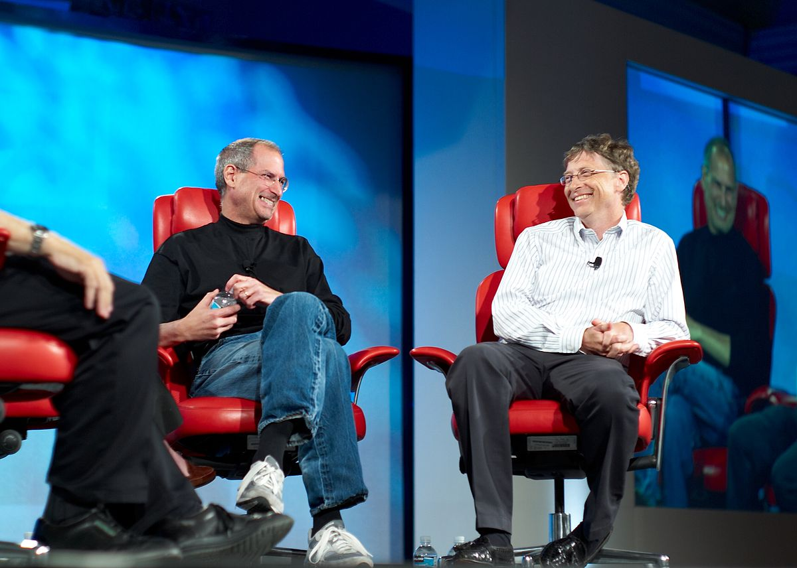

|  |
Steve Jobs dan Bill Gates pada konferensi D: All Things Digital kelima (D5) tahun 2007 |
Tahun 1976, Steve Jobs, Steve Wozniak dan Ronald Wayne, dengan pendanaan dari manajer pemasaran produk dan teknisi semi-pensiun Intel A.C. "Mike" Markkula Jr., mendirikan Apple. Sebelum mendirikan Apple bersama-sama, Wozniak adalah peretas barang elektronik. Jobs dan Wozniak telah berteman selama bertahun-tahun, bertemu tahun 1971 ketika teman mereka, Bill Fernandez, memperkenalkan Wozniak yang berusia 21 tahun kepada Jobs yang berusia 16 tahun. Steve Jobs berusaha membuat Wozniak tertarik merakit komputer dan menjualnya. Ketika Apple terus meluas, perusahaan mulai mencari eksekutif berpengalaman untuk membantu mengelola ekspansinya. Tahun 1978, Apple merekrut Mike Scott dari National Semiconductor untuk menjabat sebagai CEO yang berujung pada tahun-tahun kelam. Tahun 1983, Steve Jobs berhasil memancing John Sculley keluar dari Pepsi-Cola untuk menjabat sebagai CEO Apple dengan menanyakan, "Apakah kau mau menjual air gula sepanjang hidupmu, atau kau mau bekerja bersamaku dan mengubah dunia?" Pada tahun berikutnya, Apple menyiarkan iklan televisi Super Bowl berjudul "1984". Pada pertemuan pemegang saham tahunan Apple tanggal 24 Januari 1984, Jobs yang emosional memperkenalkan Macintosh kepada hadirin yang sangat antusias; Andy Hertzfeld menggambarkan suasana tersebut sebagai "pandemonium." Macintosh menjadi komputer kecil pertama yang sukses secara komersial dengan antarmuka pengguna grafis. Pengembangan Mac dimulai oleh Jef Raskin, dan diambil alih oleh Jobs. Meski Jobs digambarkan sebagai direktur Apple yang persuasif dan karismatik, sejumlah karyawannya pada waktu itu menggambarkannya sebagai manajer yang selalu berubah pikiran dan temperamental. Penurunan penjualan di seluruh industri menjelang akhir 1984 mengakibatkan keretakan hubungan kerja Jobs dengan Sculley, dan pada akhir Mei 1985 – setelah ketegangan internal dan pengumuman PHK besar-besaran – Sculley mengakhiri jabatan Jobs sebagai kepala divisi Macintosh.